C) Demografická projekceÚloha 2 · 8 b
Logika v kostce
1 · Teorie a vzorce – přímo ze slidů
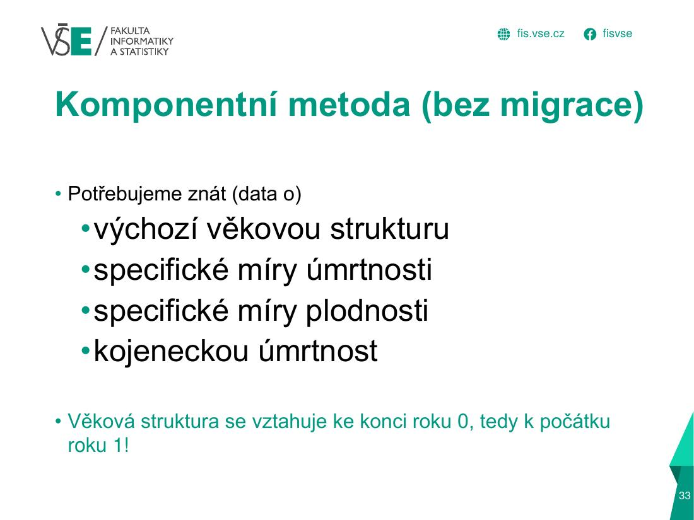
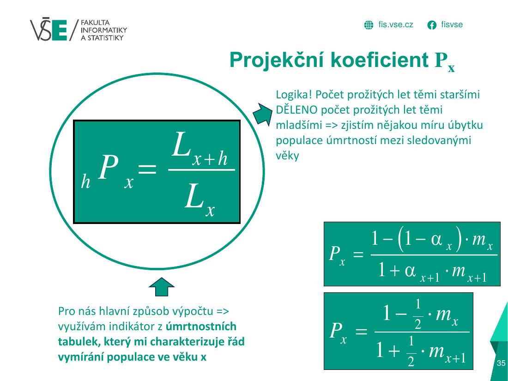
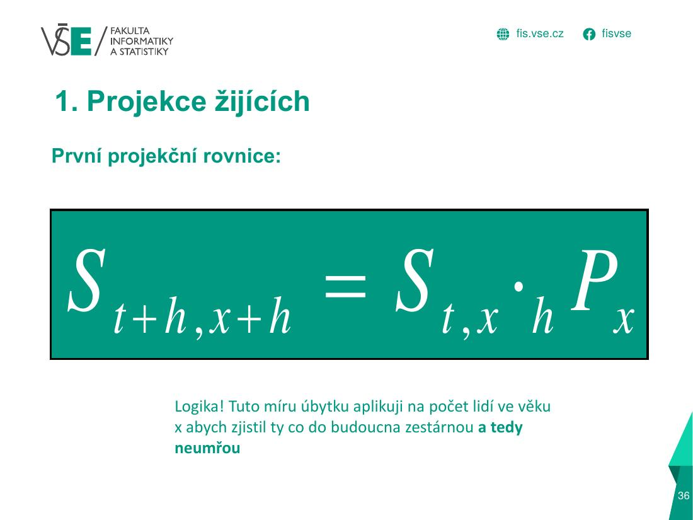
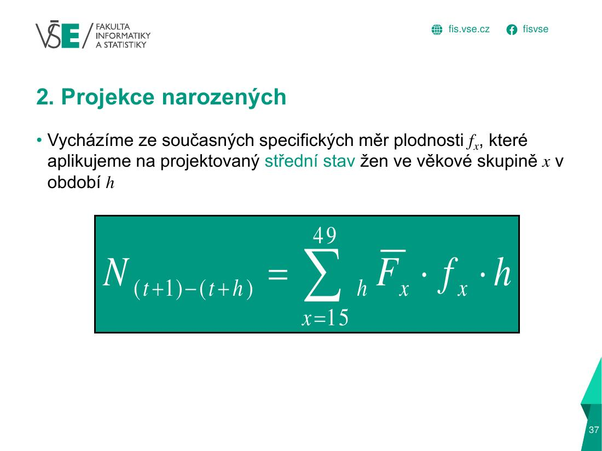
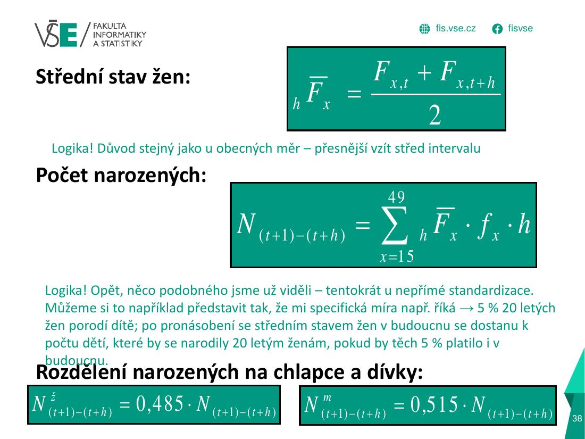
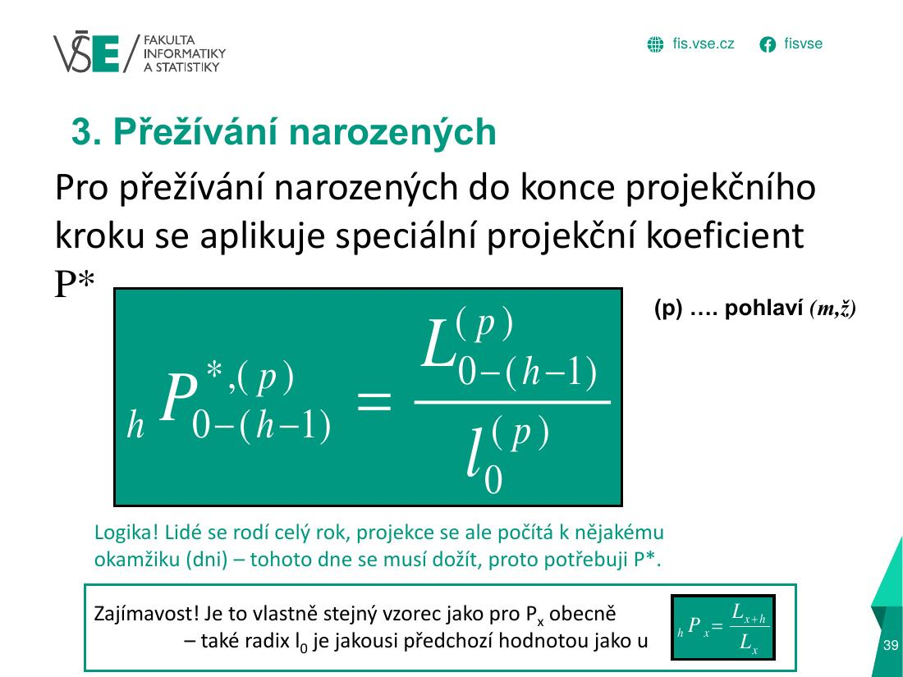
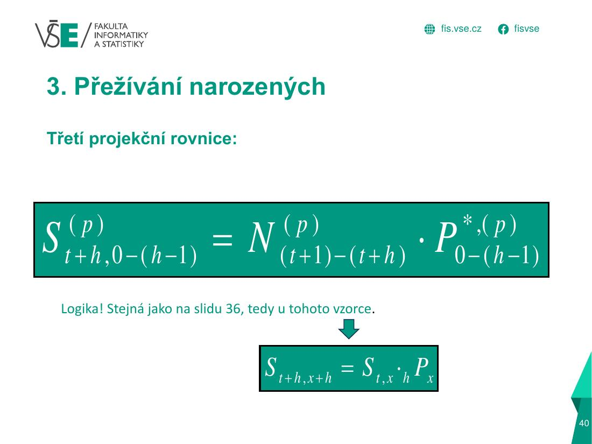
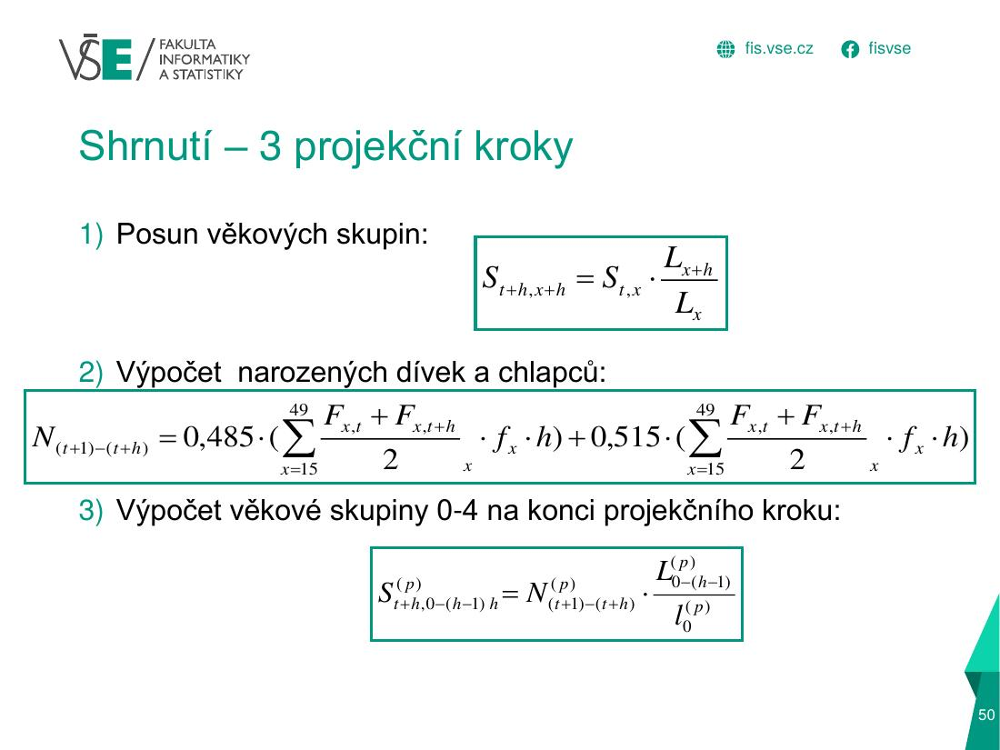

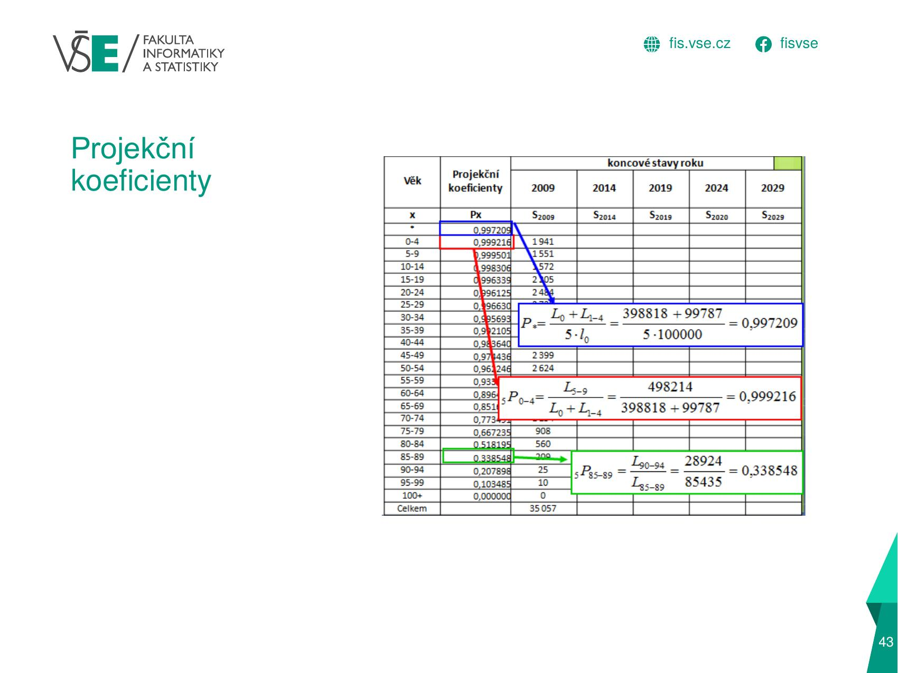
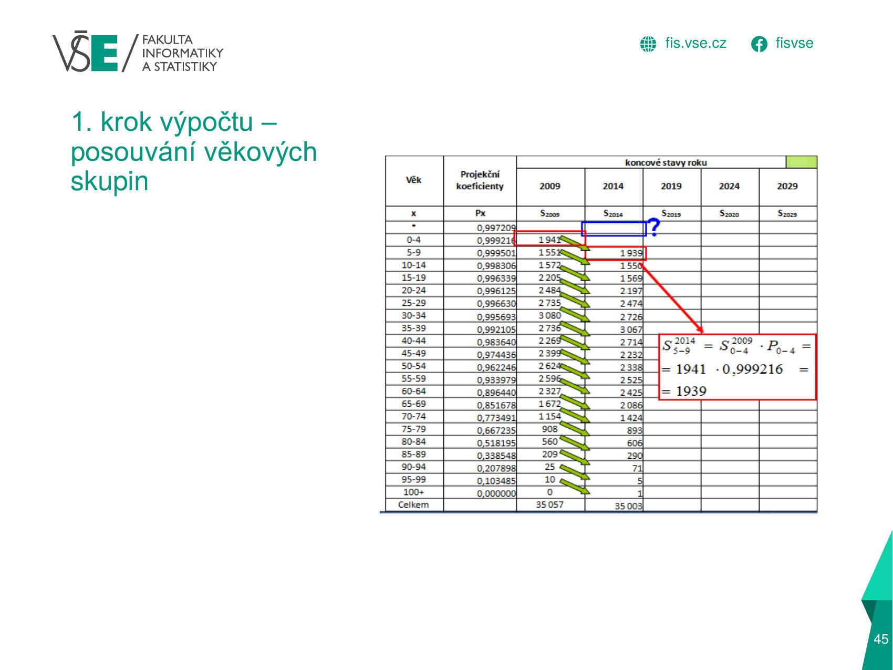
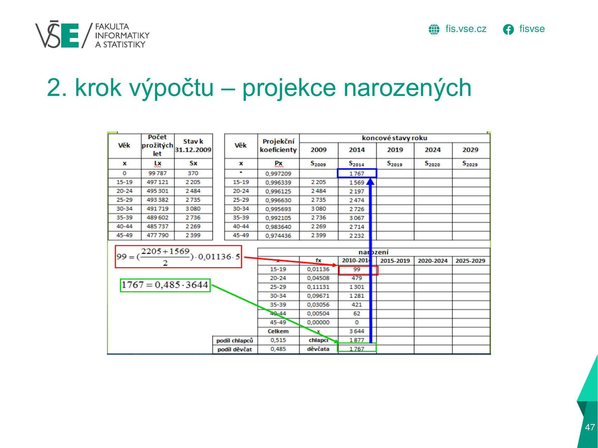
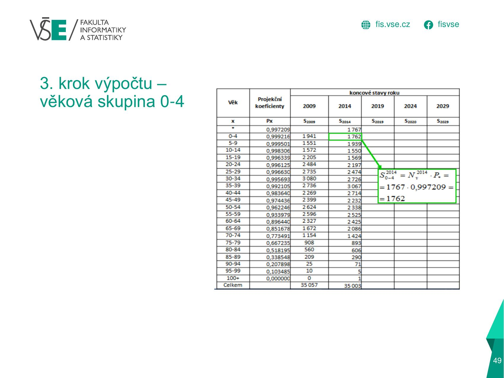
2 · Graficky: jak se to počítá
Posun věkových skupin o 5 let (muži)
Příklad – muži
P* – přežití novorozenců
P pro skupinu 10–14
Posun skupiny 20–24 → 25–29 v roce 2025
Příklad – narození z ženské části (ženy)
Střední stav žen ve věku 30–34
Narození za 5 let ve skupině
Součet za všechny věky 15–49 a rozdělení podle pohlaví
Přežívání novorozených do skupiny 0–4 (ženy)
3 · Jak to vypadá v Excelu (tvoje semestrální práce)
| A | B | C | D | E | F | G | H | I | J | |
|---|---|---|---|---|---|---|---|---|---|---|
| 6 | Věk | Počet prožitých let | Stav 31.12.2025 | Věk | Projekční koeficienty | 2 025 | 2 030 | 2 035 | 2 040 | 2 045 |
| 7 | x | Lx | Sx | x | Px | Sx | Sx | Sx | Sx | Sx |
| 8 | * | 0,99733 | ||||||||
| 9 | 0-4 | 498 662,76 | 2 495 | 0-4 | 0,99936 | 2 495 | ||||
| 10 | 5-9 | 498 341,35 | 2 972 | 5-9 | 0,99932 | 2 972 | 2 493,39 | 0 | 0 | 0 |
| 11 | 10-14 | 498 003,73 | 2 963 | 10-14 | 0,99872 | 2 963 | 2 969,99 | 2 491,70 | 0 | 0 |
| 12 | 15-19 | 497 366,31 | 3 170 | 15-19 | 0,99686 | 3 170 | 2 959,21 | 2 966,19 | 2 488,51 | 0 |
| 13 | 20-24 | 495 804,99 | 2 772 | 20-24 | 0,99522 | 2 772 | 3 160,05 | 2 949,92 | 2 956,87 | 2 480,70 |
| 14 | 25-29 | 493 435,64 | 2 687 | 25-29 | 0,99479 | 2 687 | 2 758,75 | 3 144,95 | 2 935,82 | 2 942,74 |
| ⋮ | … řádky 15–27 mají stejný vzorec (vyplněno dolů) … | |||||||||
| 28 | 95+ | 11 659,56 | 24 | 95+ | 0 | 24 | 32,50419 | 46,70959 | 61,90223 | 89,15129 |
B9 ='ÚT+plodnost'!J10+'ÚT+plodnost'!J11– L0–4 = L0 + L1–4 z úmrtnostní tabulky (ostatní řádkyB10 =…J12).E8 =B9/(5*'ÚT+plodnost'!H10)– P* = L0–4 / (5·l0) pro nově narozené.E9 =B10/B9– projekční koeficient Px = Lx+5 / Lx (poměr počtu prožitých let následující a dané skupiny).F9 =C9– výchozí stav k 31. 12. 2025 ·G10 =F9*$E9– 1. krok: skupina se posune o 5 let a vynásobí se koeficientem (šikmý posun v tabulce;$Ezamyká sloupec).
| D | E | F | G | H | I | J | |
|---|---|---|---|---|---|---|---|
| 64 | Věk | Specifické míry plodnosti | Šířka věkového intervalu | Období | |||
| 65 | x | fx | hx | 2021-2025 | 2026-2030 | 2031-2035 | 2036-2040 |
| 66 | Nv | Nv | Nv | Nv | |||
| 67 | 15-19 | 0,00459 | 5 | ||||
| 68 | 20-24 | 0,03046 | 5 | ||||
| 69 | 25-29 | 0,08873 | 5 | ||||
| 70 | 30-34 | 0,0903 | 5 | ||||
| 71 | 35-39 | 0,04042 | 5 | ||||
| 72 | 40-49 | 0,00445 | 10 | ||||
| 73 | Celkem | X | |||||
| 74 | Chlapci | 0,515 | |||||
| 75 | Děvčata | 0,485 |
- Tabulka „Odhad počtu narozených“ má připravené míry plodnosti fx (
E67 ='ÚT+plodnost'!F76), šířku intervalu h a podíl chlapců/děvčat (0,515 / 0,485), ale období 2021–2025, 2026–2030… jsou prázdná.
2. krok – narození: do
H67 napiš střední stav žen v dané skupině × fx × h: =((F_žen_2025 + G_žen_2030)/2)*$E67*$F67, sečti v H73 (celkem N za 2026–2030), H74 =H73*E74 (chlapci 0,515), H75 =H73*E75 (děvčata 0,485).3. krok – nová skupina 0–4:
G9 =chlapci_za_období * $E$8 (narození × P*). Až pak se začnou správně plnit sloupce H, I, J (teď tam jsou nuly, protože G9 je prázdná).Postup je ve slidech výše (kroky 1–3) i ve vyřešeném příkladu v sekci Postup.
4 · Doplňky z přednášek
Další vzorce z přednášek (méně časté, ale mohou být v teorii)
5 · Doplňující text, tabulky a časté chyby
Rozbalit textový výklad (pro kontrolu a opakování)
| Krok | Co | Vzorec |
|---|---|---|
| 0 | projekční koeficienty z ÚT | Px = Lx+h / Lx · P* = L0–4 / (h · l0), kde L0–4 = L0 + L1–4 |
| 1 | posun žijících (všechny skupiny kromě 0–4) | St+h, x+h = St,x · Px |
| 2 | střední stav žen ve věku x | F̄x = (Fx,t + Fx,t+h) / 2 |
| 2 | narození za období (h = 5 let) | N = Σ F̄x · fx · h (15–49) |
| 2 | rozdělení narozených | děvčata 0,485·N · chlapci 0,515·N |
| 3 | nová skupina 0–4 letých | St+h, 0–4 = N(pohlaví) · P*(pohlaví) |
Vyřešený příklad – projekce mužů (posun skupin, P*)
Zadání (vzorový příklad „složitější“ č. 5, muži): Lx z ÚT mužů, stav k 31. 12. 2020 a projekční koeficienty. Hledané (žlutě): P10–14, P* a hodnota ve skupině 25–29 v roce 2025.
P* = L0–4 / (5·l0) = 498 951 / (5 · 100 000) = 0,9979
P10–14 = L15–19 / L10–14 = 497 928 / 498 366 = 0,999121
S2025, 25–29 = S2020, 20–24 · P20–24 = 3 980 · 0,997199 = 3 969
| Věk | Lx | S 2020 | Px | S 2025 |
|---|---|---|---|---|
| 0–4 | 498 951 | 6 289 | 0,999349 | 4 712 |
| 5–9 | 498 626 | 7 268 | 0,999479 | 6 285 |
| 10–14 | 498 366 | 7 035 | 0,999121 | 7 264 |
| 15–19 | 497 928 | 5 000 | 0,998193 | 7 029 |
| 20–24 | 497 028 | 3 980 | 0,997199 | 4 991 |
| 25–29 | 495 636 | 4 503 | 0,996116 | 3 969 |
| 30–34 | 493 711 | 5 867 | 0,994738 | 4 486 |
Skupina 0–4 v roce 2025 (4 712 = Nm · P*) je dána počtem narozených chlapců. Např. 5–9: 6 289 · 0,999348 = 6 285 (posun skupiny 0–4 z roku 2020).
Interpretace: koeficienty jsou blízko 1 (přežívání mladých věků je velmi vysoké); s věkem klesají – např. Px = 0,7 by znamenalo, že 30 % skupiny do dalšího kroku nepřežije.
Vyřešený příklad – projekce žen (narození, rozdělení, 0–4)
Zadání (vzorový příklad č. 6, ženy): období 2021–2025, krok h = 5. Specifické míry plodnosti jsou v zadání zaokrouhlené (0,01; 0,05; 0,11; 0,11; 0,05; 0,01; 0,01), proto použij počty narozených tak, jak jsou zadány; chybějící hodnoty dopočítáš.
1) Posun žijících: S2025,x+5 = S2020,x · Px, např. 5–9: 5 906 · 0,999773 = 5 905; 10–14: 6 876 · 0,999512 = 6 873; 15–19: 6 659 · 0,999003 = 6 652.
2) Narození (žlutě = chybělo): střední stav žen 30–34: F̄ = (6 196 + 4 453)/2 = 5 324,3; N30–34 = F̄ · fx · 5 = 5 324,3 · 0,11 · 5 = 2 928.
| Věk | fx | N 2021–2025 |
|---|---|---|
| 15–19 | 0,01 | 207 |
| 20–24 | 0,05 | 1 012 |
| 25–29 | 0,11 | 2 318 |
| 30–34 | 0,11 | 2 928 |
| 35–39 | 0,05 | 1 899 |
| 40–44 | 0,01 | 442 |
| 45–49 | 0,01 | 251 |
| Celkem | 9 057 |
Rozdělení: děvčata = 0,485 · 9 057 = 4 393; chlapci = 0,515 · 9 057 = 4 664.
3) Přežívání narozených: P*(ž) = L0–4 / (5 · l0) = 499 498 / 500 000 = 0,998996 → S2025,0–4 = 4 393 · 0,998996 = 4 389.
Interpretace: za 5 let (2021–2025) se v populaci narodí zhruba 9 057 dětí (≈ 1 800 ročně), z toho 4 393 děvčat. Populace žen v plodném věku v roce 2025 je menší/větší podle toho, jak silné ročníky do něj vstupují.
Doplňky z přednášky 5 (teorie k projekcím)
- Exponenciální růst: průměrný roční růst k = ln(St/S0)/t. Příklad: S0 = 10 000, S5 = 16 487 → k = ln(1,6487)/5 = 0,5/5 = 0,1 (10 %); zdvojení za n = ln 2 / k = 0,693/0,1 = 6,93 roku.
- Projekce se dělají ve variantách (pesimistická, střední, optimistická); konstantní scénář = neměnná plodnost i úmrtnost (náš příklad).
- Prognózy ČSÚ (2018, 2023–2100) i OSN; dlouhodobé projekce (např. do 2300) dávají často nepoužitelné výsledky.